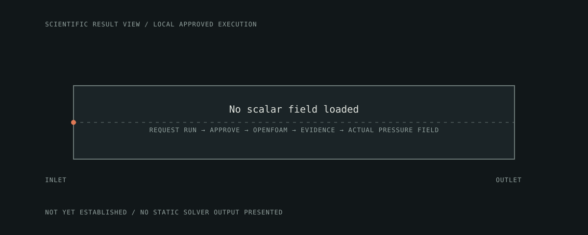

Compressible nozzle precursor
Solver completed; numerical status NOT_ESTABLISHED. This is a bounded teaching run, not validated nozzle performance.
864 mesh cells
rhoSimpleFoam completed
0.01 kg/s inlet
Energy gate unresolved
Run setup
Planar converging-diverging nozzle, 0.3 m long and one cell through a 0.012 m span. Perfect-gas air; laminar, adiabatic walls; inlet at 300 K with prescribed mass flow; fixed 101325 Pa outlet.
Recorded numerical gates
| Run completed | PASS — finalization artifacts written |
|---|---|
| Mesh quality | PASS — no negative-volume condition in the retained result |
| Residual convergence | PASS — worst final residual below 1×10⁻⁴ |
| Mass conservation | PASS — reported net mass imbalance 0% |
| Energy conservation | NOT EVALUATED — solver evidence lacks an energy balance |
| Independent validation | NOT EVALUATED — no experimental/reference case attached |
Field view
The illustration below is linked to this retained precursor run; it is not a higher-fidelity design result.

Inspect the evidence
Case inputs · Mesh study · Engineering result and gates · Markdown proof
Changing geometry, boundary conditions, material properties, or solver settings invalidates applicability of this recorded result. A new run and energy/validation review are required.